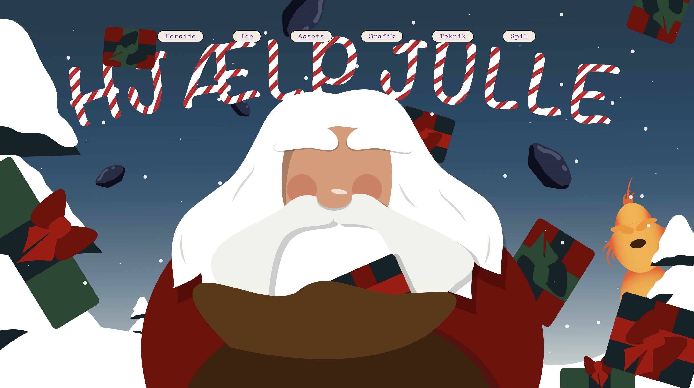

TEMA 4
Animation
Den bærende læring i dette tema, var introduktion til programeringsproget javascript. Med dette kan man tillægge et website noget mere avanceret og tilbyde et mere dynamiske website. Du kan med javascript gøre elementer interaktive og inddrage brugerne. Ved brug af javascript og css animationer, skulle vi i dette tema udarbejde et spil.Som tidligere temaer, har vi også her fokus på design processen og de metoder og værkstøjer som der anvendes til varetagelse af denne. Her startede vi med skitsering og ideudvikling. Her benyttede vi brainstorming og paperprototype. Udover kodningen/animation som det bærende i temaet og spillet, brugte vi også en stor del af tiden, på at tillære nye værktøjer i illustratior, hvor vi skulle rentegne: alle spil skærme, figurelementer og UI-elementer. Alt dette med principper i baghovedet som; formgivning og komposition, atmosfærisk perspektiv, linier og kontraster. Endvidere også focal point og rule of thirds. For at fastlægge spillet flow, har vi desuden arbejdet med aktivitets- og statemachinediagrammer, sådan at vi forinden kodningen havde en rettesnor.
04.04.01
Temaopgave

Her bestod opgaven i at animerer et interaktivt spil, som vi hver især skulle designe og programerer. Først skulle vi igennem processen ideudvikling, dette ud fra nogle krav til hvad spillet skulle indeholde: et godt og et dårlig element som skulle kunne klikkes op, som følge heraf, henholdsvis få point eller miste liv. Disse elementer skulle animeres sådan at de havde et bevægelsesmønster. Derudover skulle der indgå tid og musik/lyde. Spillet skulle minimum indeholde en forside, spilside, complete-level og game-over. Disse skulle rentegnes i illustrator. Det færdige resultat blev oploadet på eget domæne, via et website der også indeholdt dokumentation af: assest(spil baggrunde og elementer), ide(stiludgangspunkt), tekning(diagrammer) og grafik(design, skitser og screen dumps).
Jeg valgte et jule tema. Et spil hvor man ved klik på pakker skulle hjælpe Julle med at redde julen. For at komme på denne ide, brugte vi i undervisningen Cross method. Da emnet var fundet, skulle der tages stilling til den visuelle stil. Jeg valgte flat design med inspiration fra Jéróme Masi. Med det, skulle jeg følge konventionerne heraf, såsom varme farve på dét som man ønsker fokus på, og kodle farver for baggrund. Derudover også fravær af øjne eks. Altså, et meget minimalistisk udtryk. Inden selve designprocessen udførte jeg thumnail skitser, der skulle give mig overblik over mine forskellige spilskærme.